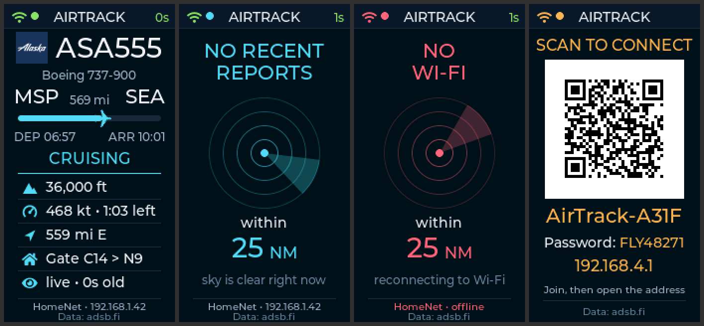
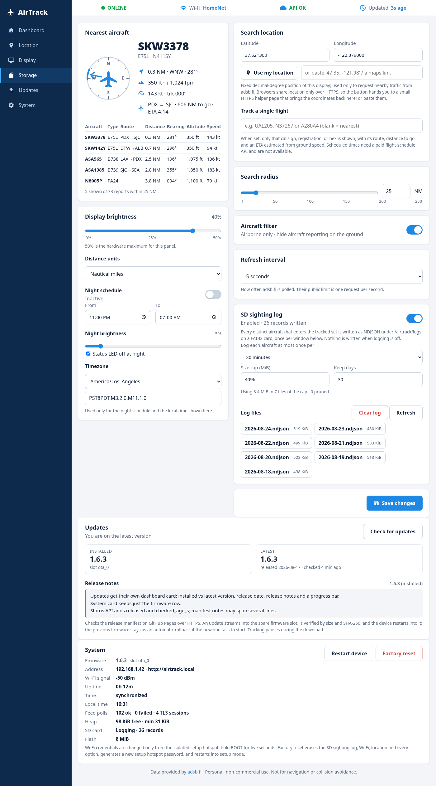
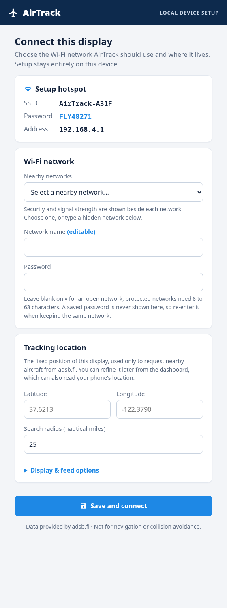

AirTrack turns a small ESP32-C6 display into a live view of the closest aircraft to you — callsign, type, distance, bearing, altitude and route — with a full dashboard on your own network.
Needs a Waveshare ESP32-C6-LCD-1.47 and a desktop Chrome, Edge, or Opera. No receiver, no soldering, no toolchain.

Positions come from the adsb.fi community feed over your own Wi-Fi, so there is no radio, antenna, or subscription involved.
Callsign, type and registration, distance and bearing on a compass, altitude, climb rate, speed, and the origin and destination airports when they are known.
Open the address on the LCD to set your position and radius, brightness, refresh rate, the night schedule, and SD logging. Nothing is exposed to the internet.
The dashboard checks for new firmware, installs it into a spare slot with a SHA-256 check, and keeps every setting. A failed image rolls back on its own.
Optional NDJSON sighting log on a microSD card with a size cap and automatic cleanup, plus a night window that dims the panel and turns the LED off.


Everything below describes firmware 1.6.3, the release this page installs.
A Waveshare ESP32-C6-LCD-1.47 with 8 MB of flash, and a USB-C data cable. That is the whole shopping list — the board has the display, the Wi-Fi radio, and a status LED built in.
A microSD card is optional and only needed if you want the sighting log. Format it FAT32; AirTrack never formats a card itself. Wi-Fi must be a 2.4 GHz network, since the ESP32-C6 does not join 5 GHz.
No. There is no radio receiver or antenna involved, and it will not pick up anything on its own. AirTrack asks the adsb.fi community feed over your internet connection for aircraft near the coordinates you configure, then shows the closest one.
That means it needs working internet, and the data is as good as whatever volunteer receivers can see in your area. Aircraft that do not broadcast a position, or that no nearby receiver hears, will not appear.
Open the installer page in desktop Chrome, Edge, or Opera, plug the board in, press Install, and pick the serial port that appears. It writes the bootloader, partition table and firmware in about a minute.
Firefox and Safari cannot do this — they do not implement Web Serial — and neither can phones or tablets. If you would rather use a command line, the repository has the esptool instructions and the full build.
Nine times out of ten it is the cable: many USB-C cables are charge-only and carry no data lines, so nothing shows up in the port list. Try a known-good data cable first.
Otherwise, close anything else holding the port (Arduino IDE, a serial monitor, a second copy of the installer page), and if it still will not connect, hold the BOOT button while plugging the cable in, release it, and press Install again.
On first boot the device starts its own hotspot, AirTrack-xxxx, and shows the name, an eight-character password, and a QR code on the LCD. Join it from a phone or laptop and the setup page opens by itself; pick your network from the scan list and enter its password.
To change networks later, hold BOOT for five seconds and the same setup hotspot comes back. Wi-Fi credentials can only be changed there, never from the normal dashboard, and they are never returned by the API or written to the log.
No, and setup will not block on it. If you leave it blank the device tracks around Seattle–Tacoma International as a stand-in and the dashboard reminds you to set the real position.
When you are ready, open the dashboard's Location card and type the coordinates, paste something like 47.35, -121.98 or a maps link, or press Use my location. The radius is yours to choose too, from 1 to 250 NM.
Browsers only hand out your position to pages served over HTTPS, and the dashboard is plain HTTP on your own network, so the button cannot ask directly. It hands you to a small helper page on this site, which is HTTPS, reads the position once, and sends you straight back to the dashboard with the coordinates filled in.
The helper stores nothing and forwards nothing; it only accepts a home-network address to return to. Typing the numbers in by hand does exactly the same job if you would rather not use it.
Yes. Put a callsign, registration, or ICAO hex into Track a single flight and the display follows only that aircraft: it shows WAITING FOR until the flight is in range, then its route, distance to go, and an ETA estimated from ground speed.
Scheduled departure and arrival times are not shown, because no free data source provides them; the ETA is arithmetic on the aircraft's current speed, not an airline schedule.
With logging on, every distinct aircraft that enters your radius is written to a daily NDJSON file under /airtrack/logs, at most once per window — 30 minutes by default, up to once a day — along with its route when known.
You choose a size cap in MiB and a number of days to keep; the oldest files are pruned first when the cap is reached. The dashboard's Storage card lists the files, shows the newest records inline, downloads them, and can clear the whole log.
Yes. Set a night window (23:00 to 07:00 by default) and a separate night brightness, and optionally have the status LED switch off during it. You will need to pick your timezone so the device knows when local night is.
The panel is capped at 50 percent brightness in hardware regardless, which is a deliberate choice for a display that runs continuously.
The refresh interval is configurable and defaults to five seconds. adsb.fi's public limit is one request per second, and AirTrack cannot be configured to exceed it; it also holds a single TLS connection open across polls instead of renegotiating every time.
Please keep it to personal, non-commercial use, which is what the feed is offered for.
The display keeps working and tells you what is wrong: the feed goes stale and then offline, and the status LED turns orange. Nothing needs restarting.
If the saved Wi-Fi disappears for more than a minute, the device opens a recovery hotspot while quietly retrying in the background, and returns to tracking by itself once the network is back.
Open the dashboard's Updates card and press Check for updates. It reads a release manifest published from this site over HTTPS and shows the installed version against the latest one, with the release notes. Pressing Install streams the new firmware into the spare flash slot, checks its size and SHA-256, and restarts into it.
Your settings, Wi-Fi, and logs all survive an update. Do not use the browser installer for this — that one is for blank boards and offers to erase everything.
The previous firmware stays in the other slot. A new image has to come up cleanly — settings loaded, display up, network and dashboard running, memory healthy — before it marks itself valid; if it cannot, the bootloader falls back to the version you were running.
In the worst case you can always reinstall from the browser installer over USB.
It asks adsb.fi for traffic near the coordinates you set, which necessarily tells that service roughly where you are looking, and it asks adsbdb.com about callsigns to fill in routes. It fetches the update manifest from this site when you press Check for updates. That is the entire list.
There are no accounts, no telemetry, and nothing is uploaded from the log. Everything else — settings, sightings, the dashboard — stays on the device and your own network, and the firmware is open source if you would like to check.
No, and please do not. AirTrack is an enthusiast display. The data is community-sourced, incomplete, and a few seconds old at best, and it is explicitly not for navigation or collision avoidance.
It is a nice way to know what just flew over your house. That is the whole ambition.
Factory reset in the dashboard's System card erases the sighting log, Wi-Fi credentials, location, and every option, generates a fresh hotspot password, and restarts into setup mode — the state a new device arrives in. It asks you to type RESET first.
Reinstalling from the browser installer with the erase option does the same thing at the flash level.
Yes. It builds with ESP-IDF 5.5.5 and the repository includes the host-side UI renderer, the tracker tests, and the release gate. The README has the build and flash commands, and docs/FIRMWARE_PLAN.md covers the architecture.
Plug the board in and let the browser do the rest.